화약취급기능사 (2003-10-05 기출문제)
1과목: 화약 및 발파
1. 단일자유면 발파에 있어서 누두공 부피(V)와 최소저항선 (W)과의 관계식은? (단, r : 누두반경)
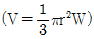
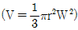
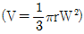
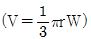
(정답률: 알수없음)

2. 다음 물질중 화약류와 관련이 가장 적은 것은?
- 테트릴
- 초석
- 아지화연
- 뇌홍
(정답률: 알수없음)
3. 어떤 암체에 대한 천공 발파결과 100g의 장약량으로 1.5m3 의 채석량을 얻었다면 300g의 장약량으로는 몇 m3의 채석이 가능한가?
- 3.4m3
- 3.8m3
- 4.0m3
- 4.5m3
(정답률: 알수없음)
4. 흑색 화약의 표준 배합율은?
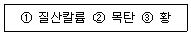
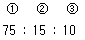
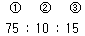
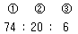
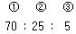
(정답률: 알수없음)
5. 면약의 성질 중 옳은 것은?
- 산, 알카리에 자연분해되지 않는다.
- 습면약보다 건면약이 취급이 안전하다.
- 에테르에 용해되지 않는다.
- 암실에서 인광을 발한다.
(정답률: 알수없음)
6. 낙추 시험에서 폭발시 몇 %가 임계 폭점인가?
- 0%
- 50%
- 80%
- 100%
(정답률: 알수없음)
7. 천공위치 선정에 있어서 가장 관계가 적은 것은?
- 사용화약류의 종류
- 갱도의 크기
- 1회 발파의 굴진장
- 발파개소의 암질 분포상태
(정답률: 64%)
8. 조절발파에 속하지 않는 것은?
- 라인드릴링(line drilling)
- 노이만 발파(Neuman blasting)
- 쿠션 블라스팅(Cushion blasting)
- 프리스플리팅(Presplitting)
(정답률: 알수없음)
9. 다음 설명 중 번커트 발파에 대한 설명이 올바르지 못한 것은? (단, 쐐기 심빼기와 비교)
- 공간격을 자유로이 조절할 수 있다.
- 자유면에 대하여 경사공 천공을 한다.
- 주변 발파시 저항선 측정이 용이하다.
- 천공 작업이 용이하다.
(정답률: 알수없음)
10. 다음 사항은 라인드릴링(line-drilling)법에 대한 특징이다. 내용이 틀린 것은?
- 이 방법은 발파에 의하여 파단면을 만드는 것이 아니고 착암기로 파단면을 만드는 것이다.
- 벽면 암반의 파손이 적으나 많은 천공이 필요하므로 천공비가 많이 든다.
- 천공은 수직으로 같은 간격으로 하여야 하므로 천공기술이 필요하다.
- 이방성이 심한 암반구조에 적용되는 방법이다.
(정답률: 알수없음)
11. 암석계수가 0.02인 암반에 천공지름 45mm로 천공하여 지름 32mm의 함수폭약을 장전하였다. 이때 디카플링(Decoupling)지수를 바르게 계산한 것은?
- 0.7
- 1.4
- 2.8
- 3.2
(정답률: 55%)
12. 다음 그림은 어느 사면에 속하는가?
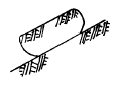
- 직립사면
- 무한사면
- 유한사면
- 선단사면
(정답률: 알수없음)
13. 다음 폭약은 니트로 화합물의 대표적인 것들이다. 니트로 화합물이 아니고 질산에스테르에 속하는 것은?
- 테트릴
- 피크린산
- 니트로 글리세린
- 헥소겐(RDX)
(정답률: 알수없음)
14. 가비중에 대한 설명이다. 다음 중 틀린 것은?
- 약량을 약포체적으로 나눈 수치이다.
- 폭약의 품종에 의해 결정된다.
- 교질계통은 비중이 낮고 분상계통은 높다.
- 비중이 작은 폭약을 저비중 폭약이라 한다.
(정답률: 알수없음)
15. 다음 니트로 화합물중 폭발속도가 가장 빠른 것은?
- 피크린산
- 트리니트로톨루엔
- 테트릴
- 헥소겐
(정답률: 알수없음)
16. 다음 중 뇌관류 성능 시험 종류가 아닌 것은?
- 납판(연판)시험
- 둔성폭약시험
- 정(못)시험
- 연주확대시험
(정답률: 알수없음)
17. 스무스 워얼 블라스팅(smooth wall blasting)법에서 주벽의 공간격이 X일 경우 이 주벽과 내부발파공의 간격(Y)은 얼마로 하면 가장 좋은가?
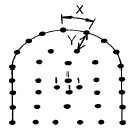
- 0.5X
- 1.5X
- 3X
- 5X
(정답률: 알수없음)
18. 발파로 인하여 발생되는 ①지반진동의 진동속도와 ②폭풍압의 강도를 표시하는 단위는? (순서대로 ①, ②)
- cm/sec, dB
- cm/sec2, kine
- mm2/min, dB
- dB, kg/cm3
(정답률: 알수없음)
19. 암석의 최소 지름이 95cm인 암석을 복토법으로 소할발파하고자할 때 필요한 장약량은 대략 얼마인가? (단, 발파계수 C=0.15 이다.)
- 1.4kg
- 3.2kg
- 4.3kg
- 5.2kg
(정답률: 알수없음)
20. 원주형 시험편의 압열인장강도를 측정하는 방법이다. 이 때의 인장강도를 산출하는 공식은? (단, St:인장강도(Kg/㎝2), P:파괴하중(Kg), D:시험편의 지름(cm), L:시험편의 길이(cm))
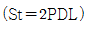
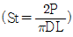
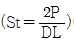
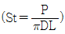
(정답률: 알수없음)
2과목: 화약류 안전관리 관계 법규
21. 풀민산수은(Ⅱ)의 성분중 Hg(ONC)2와 KClO3의 공업적인 배합비는 얼마인가?
- Hg(ONC)2 : KClO3 = 75 : 25
- Hg(ONC)2 : KClO3 = 60 : 40
- Hg(ONC)2 : KClO3 = 70 : 30
- Hg(ONC)2 : KClO3 = 80 : 20
(정답률: 알수없음)
22. 약면약에 NG(니트로 글리세린)을 배합한 것은?
- 슬러리 폭약
- 질산 암모늄 폭약
- 과염소산염 폭약
- 교질(젤라틴)다이너마이트
(정답률: 알수없음)
23. 다음 중 발사약이라 할 수 있는 것은?
- 흑색화약
- 초안폭약
- 뇌홍
- T.N.T
(정답률: 알수없음)
24. 암석의 특성에 따라 다음과 같이 화약류를 선택하였다. 옳지 못한 것은?
- 강도가 큰 암석에 에너지가 큰 폭약을 사용하였다.
- 굳은암석에 동적효과가 큰 폭약을 사용하였다.
- 수분이 있는 곳이나 수중에서 내수성 폭약을 사용하였다.
- 장공발파에서 비중이 큰 폭약을 사용하였다.
(정답률: 알수없음)
25. 다음 사항은 풀민산수은(Ⅱ)의 성질이다. 내용이 틀린 것은?
- 100℃이하로 오랫동안 가열하면 폭발하지 않고 분해한다.
- 600kg/㎝2로 과압하면 사압에 도달하여 불을 붙여도 폭발하지 않는다.
- 폭발하면 이산화탄소를 방출한다.
- 저장시 물속에 넣어서 보관한다.
(정답률: 알수없음)
26. 화약류저장소 이외의 장소에 저장할 수 있는 폭약량은? (단, 판매업자가 판매를 위하여 저장한 경우임)
- 1kg
- 3kg
- 5kg
- 7kg
(정답률: 알수없음)
27. 화약류를 넣은 상자를 저장소내에 저장하는 방법 중 맞지 않는 것은? (단, 3급저장소는 제외)
- 적재높이는 1.8m 이하로 해야 한다.
- 적재시에는 평행하게 쌓아올려야 한다.
- 저장소 안쪽 벽으로부터 10cm 이상을 띄워야 한다.
- 저장소 안쪽 바닥에 높이 9cm 이상의 각재로 된 침목 등을 깔고 적재하여야 한다.
(정답률: 알수없음)
28. 발파작업의 기술상 기준으로 맞는 것은?
- 갱도 굴진작업에는 번거로움을 피하기 위하여 그 작업에 필요한 최대량의 화약류를 휴대한다.
- 발파는 그 부근의 지형, 암질, 암층 등에 따라 폭약의 종류 등을 고려하여 천공, 발파한다.
- 전기발파는 일시에 발파되므로 안전하기 때문에 즉시 현장을 확인하고 안전대책을 취한다.
- 도화선 발파작업은 가격이 저렴하여 어느 곳에서나 사용함이 좋다.
(정답률: 알수없음)
29. 화약류운반신고를 하고자 하는 사람은 특별한 사정이 없는 한 운반개시 몇 시간전까지 화약류운반신고서를 발송지 관할 경찰서장에게 제출하여야 하는 가?
- 24시간전
- 15시간전
- 8시간전
- 4시간전
(정답률: 알수없음)
30. 폭약 35톤을 저장할 수 있는 1급 저장소와 제2종 보안 물건간의 보안거리로서 옳은 것은? (단, 법적 최저거리)
- 450m 이상
- 440m 이상
- 480m 이상
- 460m 이상
(정답률: 알수없음)
31. 폭약 1톤에 대한 화약류의 환산 수량으로 맞는 것은?
- 실 탄 : 1000만개
- 총용뇌관 : 2500만개
- 신호뇌관 : 250만개
- 전기뇌관 : 100만개
(정답률: 알수없음)
32. 다음 중 화공품에 속하지 않는 것은?
- 테트라센 등의 기폭제
- 자동차 에어백용 가스발생기
- 시동약
- 실탄 및 공포탄
(정답률: 알수없음)
33. 수중저장소에 화약류를 저장하려면 수면으로부터 수심 얼마 이상의 물속에 저장하여야 하는가? (단, 최소수심)
- 20㎝
- 30㎝
- 50㎝
- 60㎝
(정답률: 알수없음)
34. 화약류관리보안책임자 면허를 받은 사람이 국가기술자격법에 의하여 자격이 정지 되었다면?
- 정지기간동안 면허를 취소하고 그 기간이 종료되면 재교부 받아야 한다.
- 정지기간동안만 면허의 효력을 정지해야 한다.
- 차기 재교육을 받고 정지기간 만료 후 재교부 받아야 한다.
- 자격이 정지됨에 따라 면허를 받을 수 없으므로 재교육을 받고 재차 검증을 받아야 한다.
(정답률: 알수없음)
35. 도화선 1개의 길이가 1.5미터 이상인 때 동일인의 연속 점화수는 ?
- 5발 이하
- 10발 이하
- 15발 이하
- 20발 이하
(정답률: 알수없음)
36. 화학적 풍화작용은 주로 어느 곳에서 일어나는가?
- 한랭한 극지방
- 습윤 온난한 지대
- 건조한 사막지대
- 고산지대
(정답률: 알수없음)
37. 화산암 중에는 광물 알갱이들을 육안으로 구별할 수 없는 것이 많다. 이러한 특징을 갖는 조직을 말하는 것은?
- 비현정질조직
- 현정질조직
- 입상조직
- 등립상조직
(정답률: 알수없음)
38. 화성암의 주성분 광물은 다음중 어느 것인가?
- 석류석
- 인회석
- 각섬석
- 자철석
(정답률: 알수없음)
39. 마그마가 다른 암석에 관입하여 굳어지면 판 모양의 화성암체가 만들어진다. 이것을 무엇이라 하는가?
- 용암
- 병반
- 암맥
- 포획
(정답률: 알수없음)
40. 다음 암석중에서 염기성암인 동시에 화산암에 해당되는 것은?
- 유문암
- 석영반암
- 현무암
- 섬록암
(정답률: 80%)
3과목: 암석 및 지질
41. 유문암의 SiO2 양을 가장 근접하게 나타낸 것은?
- 70%
- 60%
- 50%
- 45%
(정답률: 알수없음)
42. 화강암이 유색광물을 거의 포함하지 않는 경우에 부르는 암석명은?
- 세립질 화강암
- 조립질 화강암
- 우백질 화강암
- 반상 화강암
(정답률: 알수없음)
43. 다음과 같은 성질을 가지고 있는 광물은 어느 것인가?
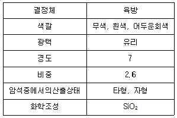
- 정장석
- 석영
- 사장석
- 각섬석
(정답률: 알수없음)
44. 화산분출시 생긴 쇄설물이 퇴적되어 형성된 퇴적암은?
- 역암, 셰일
- 석영사암, 이암
- 응회암, 집괴암
- 각력암, 실트암
(정답률: 알수없음)
45. 암석의 생성시 살던 생물의 흔적을 볼 수 있는 암석은?
- 화성암
- 변성암
- 퇴적암
- 모두다 볼 수 있다.
(정답률: 알수없음)
46. 다음 그림과 같이 한 지점을 중심으로 지괴의 움직임이 한쪽만 있고 다른 한쪽은 움직이지 않은 단층의 이름은?
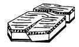
- 정단층
- 역단층
- 회전단층
- 힌지단층
(정답률: 알수없음)
47. 편리의 조직을 갖는 암석은 어떤 작용에 의한 것인가?
- 접촉변성작용
- 광역변성작용
- 기계적풍화작용
- 화학적풍화작용
(정답률: 알수없음)
48. 단층의 발견이 쉽고 잘 일어나는 암층은?
- 퇴적암
- 변성암
- 화성암
- 심성암
(정답률: 알수없음)
49. 복향사(synclinorium)란 어떤 구조인가?
- 배사가 다수의 습곡으로 이루어진 지질구조
- 주경사의 방향으로 습곡축들이 발달한 지질구조
- 향사가 다수의 습곡으로 이루어진 지질구조
- 배사가 계속 반복되는 지질구조
(정답률: 알수없음)
50. 심성암의 구조에서 광물들이 동심원상으로 모여 크고 작은 공모양의 집합체를 이룬 구조를 무엇이라 하는가?
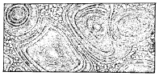
- 비현정질구조
- 구상구조
- 다공질구조
- 반상조직
(정답률: 알수없음)
51. 다음에서 퇴적암의 특징이 아닌 것은?
- 층리(bedding)
- 연흔(ripplemark)
- 건열(sum crack 또는 mud crack)
- 절리(joint)
(정답률: 알수없음)
52. 암석이 변성작용을 받을 때 암석내에서 일어나는 작용이 아닌 것은?
- 재배열작용
- 재결정작용
- 교대작용
- 분별정출작용
(정답률: 알수없음)
53. 다음 절리의 분류중 힘에 의한 분류가 아닌 것은?
- 전단절리
- 장력절리
- 주상절리
- 신장절리
(정답률: 알수없음)
54. 다음 사항은 야외에서 단층을 확인하는 증거가 된다. 관계가 가장 먼 것은?
- 단층점토
- 단층면의 주향경사
- 단층각력
- 단층면의 긁힌자국
(정답률: 알수없음)
55. 다음의 지질도에서 나타나는 지질구조는 무엇인가?
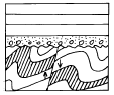
- 평행부정합
- 사교부정합
- 비정합
- 준정합
(정답률: 알수없음)
56. 석탄의 기원과 관련이 깊은 퇴적암은?
- 화학적퇴적암
- 유기적퇴적암
- 기계적퇴적암
- 쇄설성퇴적암
(정답률: 알수없음)
57. CaCO3 + 2HCℓ → CaCℓ 2 + H2O + CO2 와 같은 화학반응이 일어나는 암석은 다음에서 어느 것인가?
- 석회암
- 사암
- 화강암
- 편마암
(정답률: 알수없음)
58. 반상조직을 가진 암석의 반정이 다수 광물의 집합체로 되어 있을 때 이 암석의 석리는?
- 반상조직
- 문상조직
- 취반상조직
- 포이킬리틱조직
(정답률: 알수없음)
59. 절대연령 측정에 의한 우리나라에서 가장 오래된 암석은 무엇인가?
- 편마암류
- 화강암류
- 석회암류
- 현무암류
(정답률: 알수없음)
60. 다음 편마암중 구조에 의한 것은?
- 압쇄편마암
- 화강편마암
- 정편마암
- 반려편마암
(정답률: 알수없음)
V = (π/6) × (r^3) × (1 + 3W/r)
이 식에서 r은 누두반경을 나타내며, W는 최소저항선을 나타냅니다.
정답은 "" 입니다. 이유는 누두공 부피(V)와 최소저항선(W)은 반비례 관계에 있기 때문입니다. 즉, 최소저항선(W)이 작을수록 누두공 부피(V)는 커지게 됩니다. 따라서, W가 0에 가까워질수록 V는 무한대로 커지게 됩니다. 이를 그래프로 나타내면, W가 작을수록 V는 급격하게 증가하는 것을 확인할 수 있습니다.